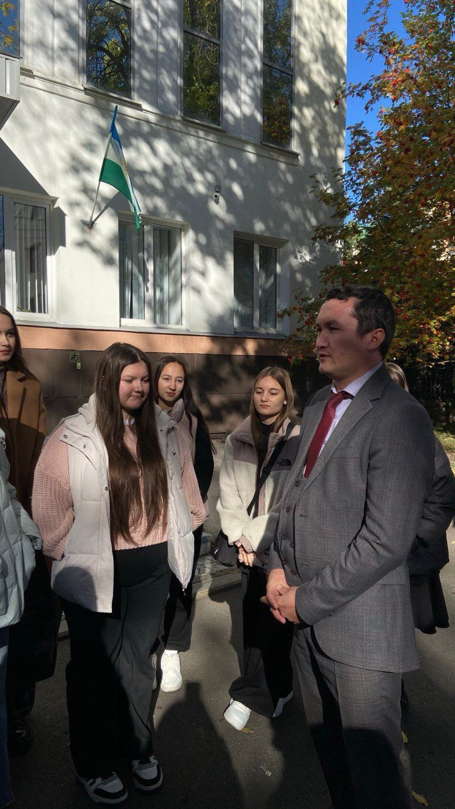
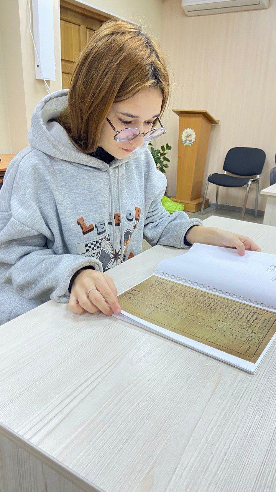

Почему важно хранить семейную память? Беседа со школьниками о семейных архивах На этой неделе мы провели открытый урок для учеников 8-х классов на тему «Цифровой семейный архив». Цель — показать подрастающему поколению, что история страны складывается из историй отдельных семей, а старые фото и документы — это не хлам, а бесценные артефакты. Ключевые тезисы нашей беседы: 1. Семейный архив — это твоя личная «история с продолжением». Он помогает понять, какие таланты, черты характера и даже профессии передаются в вашем роду из поколения в поколение. 2. Это связь с живой историей. Война, переезды, научные открытия — все это было не где-то далеко, а коснулось вашей семьи. Письмо с фронта или трудовая книжка прабабушки — это самый честный учебник истории. 3. Практическая польза здесь и сейчас. Некоторые документы (свидетельства о рождении, браке, собственности) могут помочь в восстановлении утерянных бумаг или установлении прав наследства. Что мы предложили ребятам сделать? · Создать «Сундук памяти»: Начать с простого — собрать в одну коробку все старые фотографии, документы, письма. · Запустить проект «Опроси старших»: Записать на видео или диктофон рассказы бабушек и дедушек об их детстве, юности, первой работе. · Оцифровать архив: Отсканировать самые важные документы и фотографии. Создать для них отдельную папку на компьютере и подписать файлы (например, «Иванов_Петр_выпускной_1953»). Что донесли до ребят: ✅ Архив — это не про старину. Это про вас. Ваши корни, вашу силу. ✅ Каждая неподписанная фотография — это потерянная история. Подписывайте! ✅ Самое ценное — рассказы старших. Записывайте их голоса. Пока не поздно. Реакция школьников была поразительной! Многие загорелись идеей узнать больше о своих корнях. Надеемся, этот урок станет для них началом большого и важного пути — пути к самим себе. Давайте сохранять нашу историю вместе!

